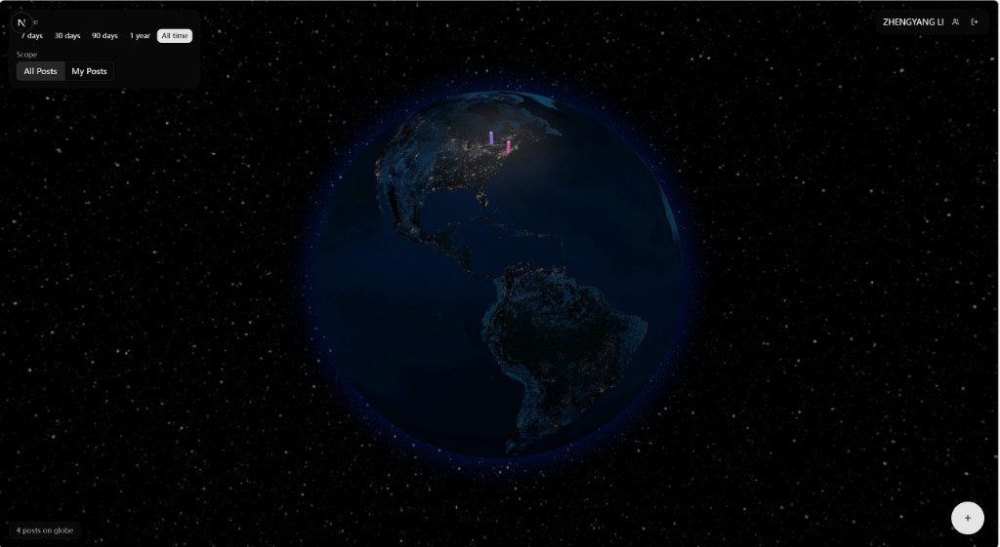

Next.js 16 React 19 TypeScript
Tailwind CSS shadcn/ui Responsive
Redux Toolkit Socket.io Client
react-globe.gl three.js
API Routes Server Actions Server Components
PostgreSQL Prisma ORM (10 models)
Better Auth Socket.io Server
DigitalOcean Spaces (S3) Sharp
Browser
(React + Redux + Socket.io)
|
v
Custom HTTP Server (server.ts)
| |
v v
Next.js Handler Socket.io
| (real-time)
v
Prisma ORM ---> PostgreSQL
|
v
DigitalOcean Spaces (images)

Backup screenshot: Globe Feed with geo-tagged posts
.ts / .tsx
sm:/md:/lg:)
proxy.tspost:updated broadcast)postsSlice shared across 4+ componentssyncPostCounts actionserver.ts wraps Next.js with custom HTTP serverglobalThis between server (native Node) and API Routes (webpack-bundled)prisma.$transaction()altitude × 2.2Qiwen Lin · Irys Zhang · Weijie Zhu · Zhengyang Li
Questions?